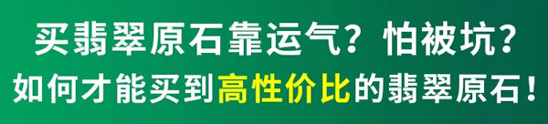
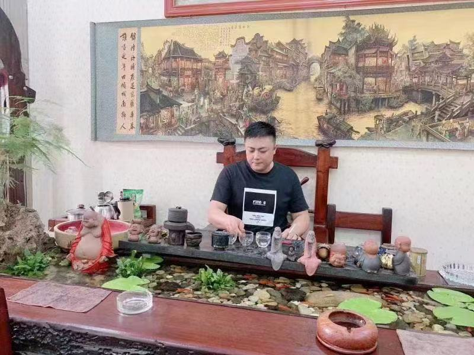
大家好，我是余老师，我每个月都会去缅甸的翡翠市场精心挑选自己心仪的翡翠原石,运到自己的翡翠加工厂,根据料子的大小不同部位来制作手镯与挂件牌子！翠友可以加我微信一起交流：
买翡翠原石不靠运气
若你遇到翡翠挑选、购买、价格等问题
微信号：{{wechat}}
↑↑长按复制上方微信号为你解答↑↑
购买翡翠原石，人们先想到的是大商场和市场代购。可行外人并不了解，商场有着租金贵、人工高等问题，他们普遍在国内的二、三级市场拿货，成本相当高！羊毛出在羊身上，中间高昂的费用都得由消费者埋单了！
我们在缅甸与各大场区的矿主都有合作，真正做到原产地采矿，自产自销。时刻为客户把好第一道关,低档原石一律淘汰!精心筛选的原石从矿区直达国内总公司！我们在货源，价格和质量上，具有性价比三重优势！即是一手货源，也是一手货源！没中间商，没有差价，只为保障客户的直接利益。
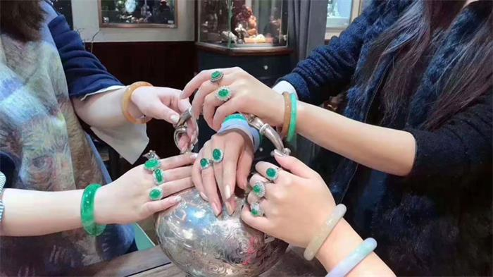
买翡翠原石跟对人很重要，经验丰富的翡翠专家会教你如何识玉知识，客观分析，风险前置，想要买亏都很难。我们从事中高端翡翠原石行业已有20多年，团队里每个人对翡翠原石的认知都在十五年以上，在业内小有名气，用我们丰富的经验，在缅甸拥有自己的矿区和源头矿主直采渠道，保证了一手高品质货源，减少靠运气选石带来的风险，为翠友开出了不少百万级珍品翡翠。
团队采购部由余老师亲自带队负责缅甸矿区采购毛料，长期混迹缅甸各大场口，对每个场口原石的品质、批次有自己独到见解，每天面对一手新鲜毛料，每块原石都精挑细选，不求数量，只收精品，保证从源头采购到物美价廉的好翡翠原石。
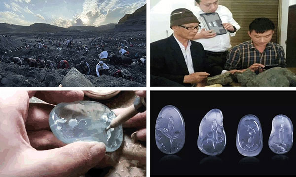
国内翠友境况，外商原石资源垄断严重。
多年来，缅甸一直依仗自己是翡翠出产大国，对翡翠实行垄断经营，国内的翡翠要价高昂，翡翠的品质却远对不起它的价格。每每听到国人又被缅商坑骗赔钱时，在缅华商都气愤不已！
（↓↓公盘高价竞标翡翠↓↓）
在缅华人强势出手，为国内翠友搭建绿色购翠通道。
现今，凭借自己的矿场优势，再联合其他在缅华人资源，着力为国内爱翠之人开辟翡翠原石绿色通道，国内翠友专享矿区直接选石，缅甸直发，0加价，让利国内翠友以最亲民的价格买高质的翡翠原石。
除了价格让利外，还提供一系类配套服务，打消所有售后隐患。
这一次高起点买原石，假货、尾货、高价货，我们都不要多年来国人买的翡翠原石总是“来路不明”，你永远不会知道你花高价买的翡翠原石到底在最初是什么地位，什么面貌？
买翡翠原石不靠运气
若你遇到翡翠挑选、购买、价格等问题
微信号：{{wechat}}
↑↑长按复制上方微信号为你解答↑↑
也许是一块不起眼的原石，经过层层中间商之手，加价贴标签，辗转到你手中，却被炒作成所谓的“高货”；又或是商家随便去缅甸土著手中低价淘来的翡翠尾货，回国后连蒙带骗的忽悠一些翡翠新手；品质稍微好点的原石，价格就是普通人难以触及的标准。
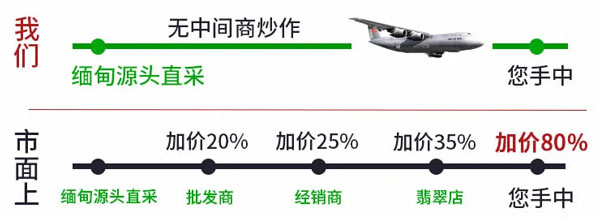
本次为国人开辟的购翠绿色通道，首次公开各个环节，从矿区原石出土—选料—包装转运—加工—成品，所有环节公开透明，可随时查验原石来源，商家资质等。
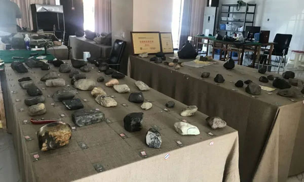
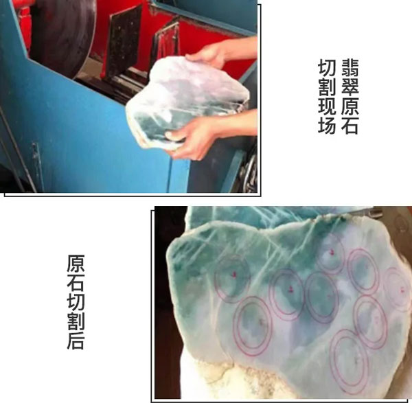
拥有自有矿场，保证一手货源
我们在缅甸有自己的矿场，确保货源稳定，都是一手货源，无中间商赚取差价。并且与缅甸各大矿主关系密切，只为确保能够拿到源头货。
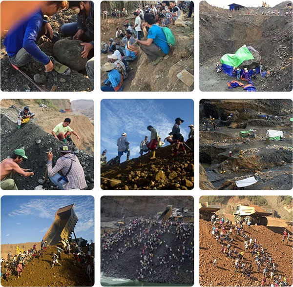
十五年专业原石采购师源头收货
团队采购部均15年以上经验丰富的老师傅负责缅甸矿区采购毛料，长期混迹缅甸各大场口，对每个场口原石的品质、批次有自己独到见解，每天面对一手新鲜毛料，每块原石都精挑细选，不求数量，只收精品，保证从源头采购到物美价廉的好翡翠原石。
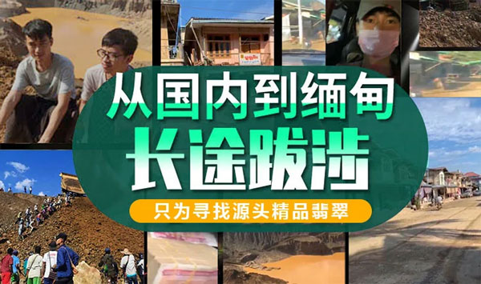
直播现场全程透明&余老师亲自把关
直播间的翡翠原石均由我带领的专家组精心挑选分级,再由直播间师傅上架，消费者只需根据自身实际需求价格出发，最终来决定是否要购买原石。直播间每天真现切现拍，360度无死角，对于我们自己原石品质的自信，在我这的翡翠原石买亏双倍赔，只为最大限度降低翠友购买风险。并且每天拿出部分精品原石半价福利放漏给大家，有喜欢的朋友不要错过。
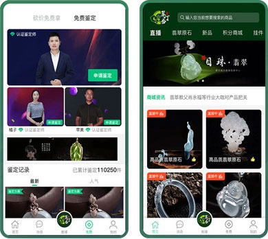
消费者只需根据自身实际需求以及价格考量来出发，最终来决定是否要购买原石。在一定程度上为消费者规避了翡翠原石的知识盲区，减少套路，透明公开交易。另外直播间内有很多原石爱好者一同在线围观，监督性强，操作规范有保障。
买翡翠原石不靠运气
若你遇到翡翠挑选、购买、价格等问题
微信号：{{wechat}}
↑↑长按复制上方微信号为你解答↑↑
私人定制，翡翠玉雕，价值翻倍涨
由翡翠高级雕刻大师李安带队充分挖掘翡翠价值，即使翡翠偶有瑕疵也会“变废为宝”成为翡翠的独特点睛之处，全程为您的每一块翡翠原石的价值保价护航。
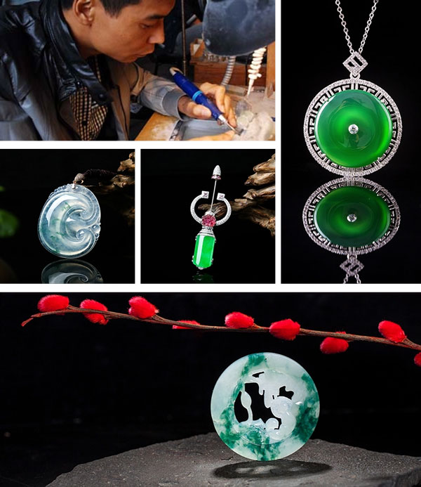
我们为助力翠友充分挖掘翡翠价值，私人订制，与业界翡翠工艺大师，翡翠高级工程师强强合作，即使翡翠偶有瑕疵也会“变废为宝”成为翡翠的独特点睛之处，全程为您的每一块翡翠原石的价值保价护航。
↑↑点击复制上方微信号了解更多↑↑
立即预约国内原石理财直播间

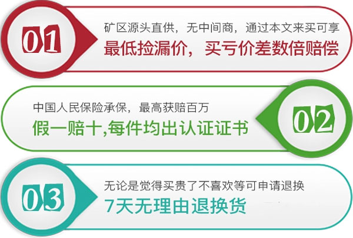
树立翡翠行业品牌，将翡翠文化推向世界。数十年来，我们扎根翡翠源、塑造口碑，凭借一手货源价格与丰富鉴定经验，我们正大踏步占据互联网翡翠原石的地位，而未来，我们的使命是代表中国的民族文化，走向世界舞台，服务全球翡翠朋友。如果您还有不放心的，在我们这边的原石您大可去随便找人对比，在我们这买亏，所买的原石不值这个钱免费送
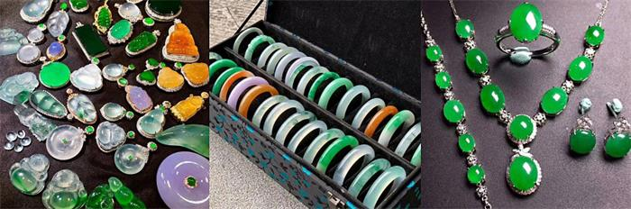
买翡翠原石不靠运气
若你遇到翡翠挑选、购买、价格等问题
微信号：{{wechat}}
↑↑长按复制上方微信号为你解答↑↑
模板查看